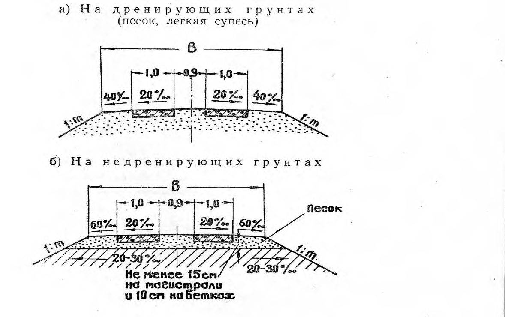
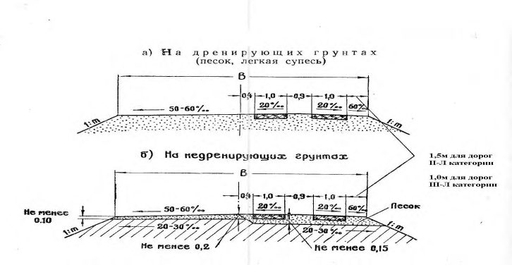

СП 318.1325800.2017 «Дороги лесные. Правила эксплуатации»
О документе: разработчики, утверждение, регистрация, ключевые слова
1 ИСПОЛНИТЕЛЬ - ЗАО «ПРОМТРАНСНИИПРОЕКТ»
2 ВНЕСЕН Техническим комитетом по стандартизации ТК 465 «Строительство»
3 ПОДГОТОВЛЕН к утверждению Департаментом архитектуры, строительства и градостроительной политики Министерства строительства и жилищно-коммунального хозяйства Российской Федерации (Минстрой России)
4 УТВЕРЖДЕН приказом Министерства строительства и жилищно-коммунального хозяйства Российской Федерации от «25» декабря 2017 г. № 1713/пр и введен в действие с «26» июня 2018 г.
5 ЗАРЕГИСТРИРОВАН Федеральным агентством по техническому регулированию и метрологии
В случае пересмотра (замены) или отмены настоящего свода правил соответствующее уведомление будет опубликовано в установленном порядке. Соответствующая информация, уведомление и тексты размещаются также в информационной системе общего пользования - на официальном сайте разработчика (Минстрой России) в сети Интернет
© Минстрой России, 2017
Настоящий нормативный документ не может быть полностью или частично воспроизведен, тиражирован и распространен в качестве официального издания на территории Российской Федерации без разрешения Минстроя России
о
Дата введения -2018 - 06 - 26
УДК 6.25.731 ОКС 93.080
Ключевые слова: лесные дороги, лесовозные дороги, лесохозяйственные дороги, лесовозные магистрали, лесовозные ветки, лесовозные усы, лесовозные автопоезда, грузосборочные дороги, лесные участки, временные лесные дорог
Введение
6 ВВЕДЕН ВПЕРВЫЕ
Настоящий свод правил разработан с учетом требований федерального закона от 27 декабря 2002 г. № 184-ФЗ «О техническом регулировании», распоряжения Правительства Российской Федерации от 17 июля 2012 г. № 1283-р «Перечень объектов лесной инфраструктуры для защитных лесов, эксплуатационных лесов и резервных лесов», Лесного кодекса Российской Федерации и правил пожарной безопасности в лесах.
Авторский коллектив свода правил СП «Дороги лесные. Правила эксплуатации»: ЗАО «Промтрансниипроект» (руководитель темы - академик PAT В.А. Сидяков, доктор техн. наук Л.А. Андреева, кандидат техн. наук А.Г. Колчанов, инженеры Ю.И. Норштейн, И.П. Потапов, А.E. Данченко, А.С. Букреева) и ОАО «ЦНИИМЭ» (доктор техн. наук Н.С. Еремеев, кандидат техн. наук Ю.А. Котельников).
СП 318.1325800.2017
1Область применения
Настоящий свод правил распространяется на эксплуатацию и капитальный ремонт лесных дорог необщего пользования и предназначенных для движения определенных категорий транспортных средств.
2Нормативные ссылки
В настоящем своде правил использованы нормативные ссылки на следующие документы:
ГОСТ 17.1.3.06-82 Охрана природы. Гидросфера. Общие требования к охране подземных вод
ГОСТ 17.1.3.13-86 Охрана природы. Гидросфера. Общие требования к охране поверхностных вод от загрязнения
ГОСТ 17.5.3.04-83 Охрана природы. Земли. Общие требования к рекультивации земель
ГОСТ 25458-82 Опоры деревянные дорожных знаков. Технические условия
ГОСТ 25459-82 Опоры железобетонные дорожных знаков. Технические условия
ГОСТ Р 50597-93 Автомобильные дороги и улицы. Требования к эксплуатационному состоянию, допустимому по условиям обеспечения безопасности дорожного движения
ГОСТ Р 52290-2004 Технические средства организации дорожного движения. Знаки дорожные. Общие технические требования
СП 34.13330.2012 «СНиП 2.05.02-85* Автомобильные дороги» (с изменением № 1)
СП 35.13330.2011 «СНиП 2.05.03-84* Мосты и трубы» (с изменением № 1)
СП 46.13330.2012 «СНиП 3.06.04-91 Мосты и трубы» (с изменением № 1)
СП 48.13330.2011 «СНиП 12-01-2004 Организация строительства» (с изменением № 1)
СП 78.13330.2012 «СНиП 3.06.03-85 Автомобильные дороги» (с изменением № 1)
СП 288.1325800.2016 Дороги лесные. Правила проектирования и строительства
Примечание - При пользовании настоящим сводом правил целесообразно проверить действие ссылочных документов в информационной системе общего пользования - на официальном сайте федерального органа исполнительной власти в сфере стандартизации в сети Интернет или по ежегодному указателю «Национальные стандарты», который опубликован по состоянию на 1 января текущего года, и по выпускам ежемесячного информационного указателя «Национальные стандарты» за текущий год. Если заменен ссылочный документ, на который дана недатированная ссылка, то рекомендуется использовать действующую версию этого документа с учетом всех внесенных в данную версию изменений. Если заменен ссылочный документ, на который дана датированная ссылка, то рекомендуется использовать версию этого документа с указанным выше годом утверждения (принятия). Если после утверждения настоящего свода правил в ссылочный документ, на который дана датированная ссылка, внесено изменение, затрагивающее положение, на которое дана ссылка, то это положение рекомендуется применять без учета данного изменения. Если ссылочный документ отменен без замены, то положение, в котором дана ссылка на него, рекомендуется применять в части, не затрагивающей эту ссылку. Сведения о действии сводов правил целесообразно проверять в Федеральном информационном фонде стандартов.
3Термины и определения
В настоящем своде правил применены следующие термины с соответствующими определениями:
- 3.1лесная дорога
- Объект лесной инфраструктуры, создаваемый в целях использования, охраны, защиты и воспроизводства лесов.
- 3.2лесная дорога лесовозная
- Лесная дорога, предназначенная для вывозки древесины.
- 3.3лесная дорога лесохозяйственная
- Лесная дорога, предназначенная для охраны, защиты и воспроизводства лесов.
- 3.4лесовозные ветки
- Дороги, примыкающие к лесовозной магистрали и являющиеся основными дорогами больших секторов лесосырьевой базы. Примечание - В отдельных случаях ветки примыкают к дорогам общей сети. [СП 288.1325800.2016, пункт 3.3]
- 3.5лесовозные усы
- Дороги постоянного или временного действия, примыкающие к лесовозной ветке (в отдельных случаях - к лесовозной магистрали).Источник: СП 288.1325800.2016, пункт 3.4
- 3.6лесная дорога зимняя (зимник)
- Лесная дорога, предназначенная для проезда в зимний период.
- 3.7транспортно-эксплуатационное состояние автомобильной леснойдороги
- Комплекс параметров и характеристик дороги, обеспечивающих ее потребительские свойства.
- 3.8трещины
- Наиболее частые деформации покрытий дорог с нежесткими дорожными одеждами. Примечание - Деформации провоцируют возникновение вторичных серповидных трещин и последующее появление выбоин. Сквозные трещины (преимущественно температурные) со временем все больше раскрываются и способствуют снижению прочности дорожной конструкции.
- 3.9поперечные и продольные косые трещины на цементобетонном покрытии
- Вид деформации, зависящий от множества факторов (опоздание с нарезкой швов, недостаточная их глубина, недостаточная толщина плиты, увеличенные размеры плиты, неудовлетворительное состояние земляного полотна и т.д.).
- 3.10просадка покрытия
- Плавная вертикальная просадка без образования трещин как результат деформаций уплотнения грунтов земляного полотна и материалов конструктивных слоев дорожных одежд.
- 3.11пучина
- Деформация увеличения объема грунта в рабочем слое земляного полотна, проявляющаяся зимой в виде появления бугров и потере ровности покрытия, в период оттаивания при проезде автомобилей - в проломах дорожного покрытия, вызванных снижением прочности переувлажненных грунтов.
- 3.12колейность
- Искажение поперечного профиля покрытия. Примечание - Колейность возникает из-за появления остаточных деформаций в рабочем слое земляного полотна, несвязных слоях основания и самом покрытии. Под воздействием движения остаточные деформации суммируются, что сопровождается ростом глубины колеи и высоты выпора покрытия по краям колеи.
- 3.13истирание асфальтобетонного покрытия
- Процесс уменьшения его толщины под воздействием колес движущихся транспортных средств в комплексе с влиянием неблагоприятных климатических условий.
- 3.14потеря шероховатости
- Недостаточное сопротивление движению (коэффициент сцепления ниже требуемого) в результате процесса полируемости каменных материалов покрытия, «выпотевания битума», образования на покрытии пленки (слоя) из материалов с низким коэффициентом сцепления.
- 3.15шелушение поверхности цементобетонного покрытия
- Разрушение поверхности на глубину до 30 мм за счет отслаивания тонких пленок и чешуек материала в результате недостаточной морозостойкости бетона, нарушения технологии производства строительных работ, применения противогололедных реагентов.
- 3.16выбоины
- Локальные разрушения поверхности покрытия в виде углублений разной формы с резко выраженными краями. Примечание - Выбоины являются следствием образования и развития сетки трещин, действия шины с шипами, нарушения технологии производства работ, недостаточной прочности покрытия.
- 3.17проломы
- Разрушения дорожной одежды на всю толщину на отдельных участках разной площади, растрескивание покрытия на отдельные блоки с просадкой их части в результате резкого снижения прочности земляного полотна, недостаточной прочности дорожной одежды, воздействия ненормативной нагрузки.
- 3.18нарушение ровности цементобетонного покрытия
- Нарушения в технологии бетонирования, выпучивание покрытия в швах расширения или сжатия, качание плит, образование перекосов плит в продольном и поперечном направлениях в результате конструктивных нарушений, воздействия нерасчетных нагрузок и интенсивности движения, нарушения прочности основания и земляного полотна и т.д.
- 3.19сколы кромок и разрушения в зоне швов цементобетонных покрытий
- Местные разрушения из-за засорения швов твердыми предметами, отсутствия в швах герметика, низкого качества бетона и т.д.
- 3.20«гребенка» на покрытии
- Нарушение ровности в виде чередования поперечных выступов и углублений с плавными очертаниями переходов. Примечание - «Гребенка» является следствием возникновения в материале покрытия недопустимых сдвигающих напряжений, низкой сдвигоустойчивости материала покрытия, воздействия повышенной положительной температуры, повышенной влажности материала покрытия (дороги с переходными и низшими типами покрытий).
- 3.21пылимость
- Разрушение поверхности покрытия с образованием на нем слоя мелкодисперсного материала (частицы менее 1 мм), образующегося под действием температуры, воды и колес движущихся автомобилей.
4Классификация лесных дорог
4.1Назначение лесных дорог
Лесные дороги по назначению подразделяются на лесовозные лесные дороги и лесохозяйственные лесные дороги согласно разделу 4 СП 288.1325800.2016.
4.2Сроки действия лесных дорог
Лесовозные лесные дороги подразделяются на дороги постоянного действия и временные со сроком действия до трех лет. В свою очередь дороги временного действия подразделяются по временам года на зимние и летние согласно СП 288.1325800.
Лесохозяйственные лесные дороги проектируются и строятся как дороги постоянного действия без сезонного подразделения.
4.3Категории лесных дорог
Категории лесных дорог приняты согласно таблице 4.1 СП 288.1325800.2016.
5Мониторинг состояния лесных дорог
Территориально лесные дороги расположены в государственном лесном фонде России, и их учет и мониторинг должен осуществляться на основании действующего лесного законодательства и подзаконных актов государственных органов исполнительной власти по управлению государственным имуществом в области лесных отношений.
Лесные дороги являются объектом лесной инфраструктуры [6].
Учет и мониторинг лесных дорог, расположенных в государственном лесном фонде в соответствии с лесным законодательством осуществляется при разработке лесных планов и лесохозяйственных регламентов, проведении лесоустройства, разработке проекта освоения лесов в рамках договора аренды лесного участка.
При таксации лесов приводят описание всех дорог, проходящих через каждый лесной квартал. Для каждой дороги указывают назначение (лесная: лесохозяйственная, лесовозная; общего пользования), тип (железная дорога широкой или узкой колеи, автомобильная дорога с искусственным покрытием, грунтовая дорога круглогодового или сезонного действия, постоянная канатная дорога, лежневая дорога, лесоспуск), ширину трассы и земляного полотна, протяженность и состояние дороги. Указывают также наличие и состояние мостов и других дорожных сооружений. Все дороги отображаются на картах лесов.
При проведении мониторинга используют:
- данные спутниковых изображений местности;
- данные метеонаблюдений;
- визуальный осмотр состояния дороги;
- отчеты эксплуатирующих организаций о состоянии дороги;
- инструментальную съемку состояния дороги.
6Организацияэксплуатации лесных дорог
6.1Эксплуатационные показатели лесных дорог
Таблица 1
| Показатели | Категории лесных дорог | Категории лесных дорог | Категории лесных дорог | Категории лесных дорог | Категории лесных дорог | Категории лесных дорог |
|---|---|---|---|---|---|---|
| I-ЛВ | II-ЛВ | III-ЛВ | IV-ЛВ | I-ЛХ | II-ЛХ | |
| Интенсивность движения транспорта, ед. в сутки | Более 200 | 100 - 200 | 50-100 | Менее 50 | 50-100 | Менее 50 |
| Максимальная габаритная ширина ТС,м | 3,2 | 3,2 | 3,2 | 2,55 | 2,55 | 2,55 |
| Максимальная длина ТС, м | 30 | 30 | 30 | 20 | 20 | 20 |
6.1.2 Типы дорожной одежды в зависимости от категории лесных дорог постоянного действия приведены в таблице 2 согласно СП 288.1325800. Таблица 2
| Наимено- вание показыва- ется | Категории лесных дорог | Категории лесных дорог | Категории лесных дорог | Категории лесных дорог | Категории лесных дорог | Категории лесных дорог |
|---|---|---|---|---|---|---|
| Наимено- вание показыва- ется | I-ЛВ | II-ЛВ | III-ЛВ | IV-ЛВ | I-ЛХ | II-ЛХ |
| Тип дорожной одежды | Капитальный облегченный | Переходный | Низший | Низший | Переход- ный | Низший |
6.1.3 Рекомендуемые области применения типов дорожного покрытия лесных дорог временного действия приведены в таблице 3.
Таблица 3
| Тип дорожного покрытия | Область применения |
|---|---|
| Колейное из деревянных инвентарных колесопроводов | Участки III типа местности со слабыми минеральными грунтами, заболоченные участки со слоем торфа до 2 м. Лесовозные поезда общей массой до 60 т |
| Колейное из железобетонных плит | Участки III типа местности со слабыми минеральными грунтами, заболоченные участки со слоем торфа до 2 м. Лесовозные поезда общей массой до 60 т |
| Гравийное, уложенное на земляное полотно с хворостяной выстилкой | Участки III типа местности и со слабыми минеральными грунтами при наличии песчано-гравийных материалов в радиусе до 5 км. Лесовозные поезда общей массой до 40 т |
| Из местного грунта, улучшенного добавками | Участки II типа местности и со слабыми минеральными грунтами при наличии глинистых грунтов, мелкозернистого песка с расстоянием подвозки до 5 км. Лесовозные поезда общей массой до 40 т |
| Грунтовое | Участки I типа местности, скалистые грунты, песчаные грунты, супеси с примесью гравия или щебня. Лесовозные поезда общей массой до 40 т в летний и зимний периоды года |
| Примечание-Типы местности по характеру увлажнения по СП 34.13330. | Примечание-Типы местности по характеру увлажнения по СП 34.13330. |
Таблица 4
| Категория автомобильных дорог | Число полос движения | Ширина проезжей части лесных дорог при ширине транспортного средства, м | Ширина проезжей части лесных дорог при ширине транспортного средства, м | Ширина обочин лесовозных веток при ширине транспортного средства, м | Ширина обочин лесовозных веток при ширине транспортного средства, м |
|---|---|---|---|---|---|
| Категория автомобильных дорог | Число полос движения | до 2,5 | от2,5 до 3,5 | до 2,5 | от 3,0 до 3,5 |
| I-ЛВ | 2 | 7,5 | 7,5-10,5 | 1,5 | 1,5 |
| II-ЛВ | 2/1 | 7,0 | 7,0-9,5 | 1,5 | 1,5 |
| III-ЛВ, I-ЛХ | 1 | 4,5 | 4,5-5,5 | 1,0 | 1,0 |
| IV-ЛВ, II-ЛХ | 1 | 4,5 | 4,5-5,5 | 1,0 | 1,0 |
Примечание - Для промежуточных значений габаритов автомобилей по ширине минимальные значения параметров поперечного профиля определяются интерполяцией с округлением в большую сторону до 0,5 м.
6.2Показатели транспортно-эксплуатационного состояния лесных дорог и дорожных сооружений
Таблица 5
| Показатели безопасности движения | Величины показателей по степени опасности участков дорог | Величины показателей по степени опасности участков дорог | Величины показателей по степени опасности участков дорог | Величины показателей по степени опасности участков дорог |
|---|---|---|---|---|
| неопасный | мало опасный | опасный | очень опасный | |
| Коэффициент безопасности | Более 0,8 | 0,6-0,8 | 0,4-0,6 | < 0,4 |
| Коэффициент относительной аварийности: - вне населенных пунктов - в населенных пунктах | Менее 0,3 Менее 0,4 | 0,3-0,7 | 0,7-1,3 | Более 1,3 |
| 0,4-0,9 | 0,9-1,5 | Более 1,5 |
6.3Порядок пользования лесными дорогами и их охрана
СП 318.1325800.2017 закрытия и продолжительность ограничения движения определяет эксплуатирующая организация, в зависимости от погодных условий [3].
На полосе отвода лесных дорог без согласования с органами государственной исполнительной власти субъектов Российской Федерации в области лесных отношений (лесничества, лесопарки) запрещается:
- производить строительные, геологоразведочные, горные и изыскательные работы, устраивать наземные сооружения, устанавливать дорожные знаки и указатели;
- спускать канализационные, промышленные, мелиоративные и сточные воды в водоотводные сооружения и резервы;
- распахивать участки, вырубать и повреждать насаждения, снимать дерн и брать грунт.
6.4Организации движения на лесных дорогах
6.5Организация дорожной службы
- 1,2 -для грузосборочных и лесовозных магистралей с цементобетонным или асфальтовым покрытием;
- 1,0 - для лесовозных магистралей с остальными типами покрытия;
- 0,75 - для лесовозных веток независимо от типа покрытия;
- 0,5 - для лесовозных усов летнего и зимнего действия.
6.6Организация безопасности движения
Таблица 6
| Расстояние между осями, м | Осевая нагрузка, т, не более | Осевая нагрузка, т, не более |
|---|---|---|
| АТС группы А | АТС группы Б | |
| Св. 2,00 | 10,0 | 6,0 |
| Св. 1,65 до 2,00 включ. | 9,0 | 5,7 |
| Св. 1,35 до 1,65 включ. | 8,0 | 5,5 |
| Св. 1,00 до 1,35 включ. | 7,0 | 5,0 |
| До 1,0 | 6,0 | 4,5 |
Примечания
1 К группе А отнесены транспортные средства, выезжающие на дороги общего пользования, одежды которых построены под осевую массу 10 т.
2 К группе Б отнесены транспортные средства, выезжающие на дороги общего пользования, одежды которых построены под осевую массу 6 т.
Таблица 7
| Полная масса АТС | Полная масса АТС | Расстояние между крайними осями, | |
|---|---|---|---|
| Виды АТС | Группа А | Группа Б | м, не менее |
| Одиночные автомобили | Одиночные автомобили | Одиночные автомобили | Одиночные автомобили |
| Двухосные | 18 | 12 | 3 |
| Трехосные | 25 | 16,5 | 4,5 |
| Четырехосные | 30 | 22 | 7,5 |
| Седельные автопоезда (тягач с полуприцепом) | Седельные автопоезда (тягач с полуприцепом) | Седельные автопоезда (тягач с полуприцепом) | Седельные автопоезда (тягач с полуприцепом) |
| Трехосные | 28 | 18 | 8,0 |
| Четырехосные | 36 | 23 | 11,2 |
| Пятиосные и более | 38 | 28,5 | 12,2 |
| Прицепные автопоезда | Прицепные автопоезда | Прицепные автопоезда | Прицепные автопоезда |
| Трехосные | 28 | 18 | 10,0 |
| Четырехосные | 36 | 24 | 11,2 |
| Пятиосные и более | 38 | 28,5 | 12,2 |
6.7Обязанности работников дорожной службы
СП 318.1325800.2017 обеспечении безопасности движения специализированного транспорта и личной безопасности работников, участвующих в транспортном процессе.
Начальник дорожной службы назначается и смещается с должности собственником дороги.Начальник дорожной службы:
- руководит всей работой дороги;
- обеспечивает бесперебойную работу дороги и безопасное движение транспортных средств;
- разрабатывает и осуществляет контроль за выполнением графика движения транспорта, планового задания перевозки грузов и согласовывает работу дороги с другими службами организации;
- следит за состоянием дороги и дорожных сооружений, составляет сезонные планы работ по содержанию и текущему ремонту дорожной сети;
- утверждает перечень особозначимых искусственных сооружений и порядок надзора за ними;
- систематически контролирует выполнение работниками дороги правил технической эксплуатации, должностных инструкций, правил техники безопасности и производственной санитарии, противопожарных мероприятий, приказов и распоряжений ;
- организует техническую учебу и периодическую проверку знаний каждым работником дороги правил технической эксплуатации и должностных инструкций;
- участвует в комиссиях по выявлению причин несчастных случаев и дорожно-транспортных происшествий (ДТП) и принимает меры по их устранению;
- обеспечивает работников дороги штатной специальной одеждой, должностными инструкциями, а рабочие места - необходимым ограждением, знаками, плакатами, предупредительными надписями и другими средствами информации по безопасным условиям работ;
- обеспечивает соблюдение трудового законодательства;
- подвергает дисциплинарным взысканиям нарушителей производственной и трудовой дисциплины.
Диспетчер в административном и функциональном отношении подчиняетсяначальникудорожной службы. Диспетчер дороги осуществляет бесперебойное и своевременное обеспечение движения транспортных средств в соответствии с графиком дороги. Диспетчер дороги:
- осуществляет руководство движением транспортных средств, в соответствии с правилами технической эксплуатации, инструкциями и правилами дорожного движения, приказами и распоряжениями начальника дороги, обеспечивая четкое, своевременное, бесперебойное и безаварийное движение транспортных средств на дороге и на входящих в транспортную инфраструктуру объектах (лесных складах, погрузочных пунктах и других объектах инфраструктуры лесной дороги);
- следит за строгим соблюдением графика движения лесовозного транспорта и доставки рабочих к местам производства работ и обратно;
- производит при необходимости изменения в выпуске на линию транспортных средств;
- предотвращает простои транспортных средств при взаимодействии с мастерами и руководителями производственных участков, ответственными за выполнение погрузочно-разгрузочных операций;
- ведет график выполнения движения, книгу распоряжений, журналы заявок и учета работы транспорта;
- подводит итоги работы за смену и выявляет причины нарушения установленных графиков и планов работы участков.
Дорожный мастер подчиняется непосредственно начальнику дорожной службы дороги.
Дорожный мастер ведает всем дорожным хозяйством и руководит дорожными работами. Дорожный мастер:
- руководит текущим содержанием и ремонтом дорог и дорожных сооружений, входящих в дорожный участок;
- организует и проверяет работу дорожных рабочих;
- выдает рабочим задания и наряды и принимает выполненные работы;
- обеспечивает использование имеющихся средств механизации по назначению;
- обеспечивает правильную организацию работ и своевременное выполнение планов и заданий;
- проверяет систематически состояние дорог и дорожных сооружений и обеспечивает своевременное устранение обнаруженных дефектов;
- принимает меры по обеспечению безопасности движения на дорогах, особенно во время снежных заносов, гололеда, паводков, ледохода;
- отвечает за соблюдение правил безопасности при строительных и дорожно-ремонтных работах.
7Содержание лесных дорог и искусственных сооружений
7.1Основные виды деформаций и разрушений земляного полотна
- высокий уровень грунтовых вод;
- выход грунтовых вод по склонам вблизи земляного полотна;
- застой воды в боковых канавах, кюветах и резервах;
- наличие на обочине колей и отдельных углублений;
- неправильная и неполная очистка дорог от снега с оставлением на обочинах снежных валов;
- наличие в земляном полотне пылеватых грунтов, обладающих большой высотой капиллярного поднятия воды;
- глубокое промерзание грунтов земляного полотна.
СП 318.1325800.2017 грунтов или в результате пучинообразования (явление комплексного воздействия на пучиноопасный грунт влаги и отрицательной температуры).
7.2Содержание земляного полотна и водоотвода
- в зимний период - максимальную очистку насыпи от снежных отложений, удаление наледных образований, устройство в снежных отложениях в резервах траншей для отвода талых вод;
- в весенний период -недопущение переувлажнения грунтов земляного полотна талыми и грунтовыми водами;
- в летний период - выполнение работ по уходу за конструктивными элементами земляного полотна (обочинами, откосами, водоотводом и др.), устранению мелких деформаций и разрушений;
- в осенний период - проведение работ по защите грунтов земляного полотна от избыточного увлажнения, особенно на участках с неблагоприятными гидрологическими условиями, местами развития пучинообразования, участками дорог на болотах, подтопления земляного полотна.
- на изменения профиля откосов, наличие размывов, оползаний, обрушений, осыпей, степень зарастания откосов нежелательной растительностью;
- наличие укрепления (и вид укрепления), дефекты и повреждения обочин.
- для неукрепленных элементов системы водоотвода (канав, кюветов) - степень зарастания нежелательной растительностью (травой, кустарником, порослью), наличие мусора, мест застоя воды, затопления элементов водоотвода при ливневых осадках или снеготаянии;
- для укрепленных элементов системы водоотвода - наличие дефектов укрепления: отдельные трещины шириной до 5 мм и более, выкрашивание, пучины, сколы, обломы, разрушение швов (для бетонных конструкций), нарушения дернового покрова и посева трав - для канав и кюветов, укрепленных посевом трав.
СП 318.1325800.2017
7.3Содержание дорожных одежд
Первое профилирование проводят ранней весной (после таяния снега), для ликвидации колей и выравнивания поперечного профиля.
Второе профилирование выполняют в конце весеннего (влажного) периода для ликвидации вновь образовавшихся деформаций и окончательного выравнивания покрытия.
В летний период профилирование допускается проводить после дождей по мере необходимости.
Осенью профилирование следует проводить с таким расчетом, чтобы покрытие при эксплуатации зимой было ровное, без колей и поперечных волн.
7.4Содержание искусственных сооружений (деревянных мостов и водопропускных труб)
Деревянные мосты
При поверхностном загнивании со сваи, прогонов и других элементов на глубину до 10 мм стесывают гниль, а очищенный участок покрывают антисептической пастой.
Для уменьшения увлажнения древесины все щели, неплотности в элементах и сопряжениях после очистки шпатлюют антисептическими пастами. В отдельных случаях в местах расположения втопленных болтов, чтобы ликвидировать пазухи, допускается делать стеску бревен.
Подтягивание ослабленных болтов проводят в первые два года эксплуатации моста не реже двух раз в год, а в дальнейшем один раз. После подтягивания болтов резьбу смазывают густой смазкой.
Доски тротуарного настила на консолях поперечин для обеспечения вентиляции укладывают с зазором 2 см.
На реках, где зимой возможен подъем уровня воды, во избежание выдергивания свай вокруг них проводят околку льда. Эту зону предохраняют от замерзания, закрывая сверху утепляющим материалам (сеном, соломой, снегом и т.п.).
Водопропускные трубы
При содержании водопропускных труб необходимо следить за состоянием конструкций и материала (металла, железобетона), состоянием стыков и соединений защитных покрытий и гидроизоляции, а также состоянием насыпи и укреплений откосов, оголовков труб, русла на входе и выходе труб.
СП 318.1325800.2017 способом. На зимний период все трубы следует закрывать на входе и выходе хворостяными матами, щитами для предотвращения проникания внутрь трубы снега. На водотоках в щитах оставляют отверстия на случай оттепелей.
7.5Зимнее содержание дорог
Таблица 8
| Очередность проведения мероприятий | Категория снегозаносимости участков | Краткая характеристика параметров |
|---|---|---|
| Первая очередь | Сильнозаносимые | Нераскрытые выемки, снегоемкость подветренного откоса которых меньше суммарного объема снега, приносимого метелями и выпадающего при снегопадах, все выемки на кривых |
| Вторая очередь | Среднезаносимые | Полувыемки-полунасыпи. Раскрытые выемки. Нулевые места и насыпи, имеющие высоту менее высоты снежного покрова |
| Третья очередь | Слабозаносимые | Пересечения в одном уровне. Насыпи с ограждениями безопасности. Насыпи, имеющие высоту, равную высоте снежного покрова |
| Четвертая очередь | Незаносимые | Насыпи высотой более высоты снежного покрова |
Снегоемкость одной траншеи составляет 2-3 м³ /м, для обеспечения эффективности снегозадержания необходимо их регулярное восстанавление.
- повышение шероховатости покрытия проезжей части путем распределения фрикционных материалов (песка, высевок, щебня);
- профилактическую обработку проезжей части противогололедными химическими веществами;
- обработку образовавшегося ледяного или снежно-ледяного слоя противогололедными химическими веществами.
Обработку проезжей части химическими веществами проводят только на дорогах с твердым покрытием в случаях отсутствия фрикционных материалов.
Распределение противогололедных химических материалов во время снегопада позволяет сохранить выпадающий снег в рыхлом состоянии. После прекращения снегопада образовавшуюся на дороге снежную массу удаляют последовательными проходами снегоочистителей.
- дозированное распределение;
- рабочие органы распределительных систем должны быть в исправном состоянии и отрегулированы таким образом, чтобы попадание противогололедных материалов за пределы проезжей части было минимальным.
7.6Содержание лесных дорог временного действия
- лежневые с колейным покрытием из инвентарных деревянных щитов, железобетонных плит или плит, изготовленных из полимерных композиционных материалов, соединенных в дорожное полотно;
- гравийные на хворостяной выстилке;
- грунтовые, улучшенные гравийными добавками;
- грунтовые.
Таблица 9
| Типы дорог | Область применения |
|---|---|
| Колейные из деревянных щитов | В лесосеках типа местности III, на заболоченных грунтах и болотах типов I и II. При вывозке автопоездами с осевой нагрузкой свыше 12 т |
| Колейные из железобетонных плит или плит из стеклопластика | В лесосеках типа местности III, на заболоченных грунтах и болотах типов I и II. При вывозке автопоездами с осевой нагрузкой свыше 12 т |
| Гравийные на хворостяной выстилке | В лесосеках типов местности II и III при наличии песчано-гравийных материалов в радиусе до 5км для автопоездов с осевой нагрузкой свыше 12 т |
| Грунтовые, улучшенные гравийными добавками | В лесосеках типа местности III при отсутствии песчано- гравийных материалов и при наличии глинистых грунтов или мелкозернистых песков с расстоянием подвозки до 5км при вывозке автопоездами с осевой нагрузкой до 12 т |
| Грунтовые | В лесосеках типов местности I и II при благоприятных грунтово-гидрологических условиях при вывозке автопоездами с осевой нагрузкой до 12 т |
| Примечание - Типы болот по СП 34.13330. | Примечание - Типы болот по СП 34.13330. |
8Ремонт лесных дорог
Классификация работ по ремонту лесных дорог принята в соответствии с [9].
8.1Ремонт земляного полотна и водоотводных сооружений
- при подтоплении небольших по протяженности участков поверхностными водами или водами при разливе рек осуществляют подъемку насыпи. Это же выполняется при повышенной заносимости отдельных участков насыпи в зимний период, при образовании обширных деформаций в результате пучения грунтов;
- при потере общей устойчивости откосов насыпей и выемок на небольших по протяженности участках следует выполнятьработы по очистке мест обвалов, обрушений, оползней и др., восстановлению, планировке и уплотнению откосов, в т.ч. с ремонтом конструкций укрепления. Устойчивость откосов обеспечивают устройством берм, грунтовых банкетов, полок, осушающих откос сооружений;
- при нарушении местной устойчивости неукрепленных откосов следует выполнить профилирование их поверхности и укрепление высевом трав или решетчатыми конструкциями пространственного типа. Наиболее технологичным является биологическое укрепление с помощью геосинтетических материалов с включенными в их структуру семенами трав оптимального состава или травосеяние с покрытиями из геосинтетических материалов, обеспечивающих защиту прорастающих семян.
- необходимо, чтобы боковые резервы имели правильную форму. Для этого их следует планировать с приданием уклона в сторону от подошвы насыпи не менее 20 ‰. Если резерв имеет участки с длительным стоянием поверхностных вод, проводят его переустройство (восстановление);
- в случаях, когда работы в резерве необходимо провести в период застоя воды, воду следует отвести поперечными канавами в пониженные участки в пределах полосы отвода или во временные, специально отрытые, накопители. После испарения воды в накопителе следует провести рекультивацию. Во всех случаях поверхность резервов укрепляют посевом многолетних культурных трав.
Прочистку канав следует вести навстречу возможному течению воды. Если через канаву пропускается нерасчетное количество воды, делают поперечные выпуски в дополнительную водоотводную канаву, сооружаемую на границе полосы отвода с устройством испарительных бассейнов.
8.2Ремонт дорожной одежды
В процессе уплотнения следует следить за соблюдением поперечных уклонов и ровности покрытия, проверяя их шаблоном и 3-метровой рейкой.
8.3.1.1 На лесных дорогах в основном применяются искусственные сооружения в виде деревянных мостов и водопропускных труб. Требования к ремонту и содержанию бетонных, металлических и каменных искусственных сооружений на лесных дорогах приведены в [10] для дорог общего пользования IV и V категорий.
8.3.1.2 Эксплуатируемые искусственные сооружения постоянно подвержены воздействию транспортных нагрузок, различных природных явлений, постепенно снижающих прочность и надежность и, как следствие, ограничивающих срок службы сооружений. К природным явлениям, прежде всего, относятся переменная во времени температура и влажность воздуха, атмосферные осадки, воздействие воды и льда в сооружениях через водотоки и т.д.
В особо тяжелых условиях находятся сооружения, эксплуатируемые в районах с суровым климатом, частого перехода от низких температур к оттепелям, сейсмически опасных районах. Определенное влияние на состояние сооружений оказывают грунтовые условия, наличие разломов в местах расположения опор, возможные в горных районах оползни, камнепады и др.
8.3.1.3 Негативное влияние на состояние искусственных сооружений на автомобильных дорогах оказывают динамические нагрузки от транспортных средств, вызывающие усталостные явления в материале сооружений.
8.3.1.4 В большей степени внешним климатическим и силовым воздействиям подвергается мостовое полотно - покрытие проезжей части, деформационные швы и сопряжение моста с насыпью, тротуары, перила и ограждения безопасности.
8.3.1.5 В зоне сопряжения с насыпью возможны просадки перед сооружением и вымывание грунта. В самой конструкции сопряжения может происходить смещение несущих конструкций, их частичное или полное разрушение.
8.3.1.6 Очень важное значение имеет состояние водоотвода на проезжей части, предусматривающее отвод дождевых вод с конструкции мостового сооружения за его пределы. Нарушение водоотвода может быть вызвано отсутствием соответствующих уклонов (продольных и поперечных) на покрытии проезжей части или из-за дефектов покрытия, а также повреждения соответствующих продольных и поперечных водоотводных лотков на мостовом полотне и подходах к сооружению.
К дефектам водоотводных устройств могут быть отнесены их засорение, разрушение системы водоотвода и ее конструктивные недостатки (недостаточное количество или отсутствие водоотводных лотков).
8.3.1.7 В деревянных мостах основным дефектом конструкций является загнивание древесины в плохо проветриваемых участках и в местах переменного увлажнения. Это опорная зона пролетных строений и опор (стойки опор и ряжи), стыки и места сопряжения элементов между собой и др.
Другие зоны подвергаются в меньшей степени загниванию благодаря хорошему проветриванию, защите от дождевой воды (увлажнения) и антисептированию.
От силовых воздействий в стыковых соединениях могут быть сколы древесины как вдоль, так и поперек волокон, смятие древесины, а в изгибаемых и сжатых элементах - их разрушение.
8.3.1.8 Наиболее опасными являются дефекты, связанные с потерей устойчивости опор, ряжей, их наклоном или не стабилизирующимися осадками. Это, как правило, связано с состоянием их фундаментов: дефектами самой конструкции или грунтовыми условиями.
8.3.2.1 Потребность в работах по ремонту возникает при накоплении в элементах сооружения дефектов и повреждений, вызвавших их износ более 30 % и необходимости ограничения условий движения по искусственному сооружению.
8.3.2.2 Ремонт пролетных строений проводят в любое время, а опор и ледорезов - в зимний период со льда.
До ремонта конструкций проводят заготовку новых элементов и их деталей из древесины, отвечающих положениям СП 35.13330.
Стальные элементы (тяжи, болты и т.д.) изготавливают из углеродистых сталей, применяемых для ремонта стальных мостов. В суровых климатических условиях применяют стали северного исполнения.
8.3.2.3 При сплошной замене настила проезжей части заменяют также имеющие дефекты доски нижнего настила, поперечины и прогоны. Новые доски нижнего настила укладывают с зазором 2 см для проветривания, а доски верхнего настила прибивают плотно друг к другу. Стыки досок перекрывают на всю ширину проезжей части стальной полосой шириной 100 мм, прикрепляемой к настилу на болтах.
8.3.2.4 Элементы конструкции, имеющие сколы, трещины, смятие и другие механические повреждения, снижающие их прочность, заменяют. В случае снижения несущей способности древесины от загнивания более чем на 25 %, а также при ее внутреннем загнивании, производят замену элемента. Шпонки, колодки и подушки при загнивании заменяют.
8.3.2.5 Ремонт прогонов проводят одновременно с ремонтом проезжей части. Перекосы и наклоны в многоярусных прогонах устраняют одновременно с усилением связей между ними и подтяжкой болтов. В качестве предупредительной меры поперечные связи усиливают постановкой дополнительных распорных крестов.
Усиление прогонов достигается установкой дополнительных прогонов, подведением дополнительных опор в пролете, превращением балочной системы в треугольно-подкосную с затяжкой и др.
Дополнительные прогоны устанавливают на всей ширине моста или на ее части в зависимости от состояния конструкции пролетного строения и условий пропуска нагрузок по мосту. Установка таких прогонов может производиться снизу моста без перерыва движения по сооружению.
8.3.2.6 При загнивании и обмятии концов подкосов и ригелей их заменяют на новые, подгоняя их по месту. При этом прогоны поддомкрачивают для устранения провисания пролетного строения.
Сколовшиеся зубчатые коротыши в подушках заменяют. Если скололся зуб стойки, под существующим коротышом ставят дополнительный и включают его в работу подбивкой клиньев из дуба. На момент установки элементов усиления подкос выключают из работы с помощью временных опор.
8.3.2.7 На пойменных опорах при загнивании свай заменяют весь поврежденный участок. Нижний стык сваи устраивают ниже зоны загнивания, а верхний стык вставки размещают в месте пересечения сваи со связями. Стык выполняют в торец и укрепляют накладками.
При загнивании сваи в стыке новый стык устраивают ниже старого и выполняют в торец с накладками на болтах. Металлические накладки изготавливают из полосовой стали толщиной не менее 8-10 мм.
В случае загнивания сваи в уровне, близком к воде, стык вставки со сваей выполняют в торец на металлическом штыре и перекрывают накладками на болтах.
8.3.2.8 Строительный подъем ферм восстанавливается подтягиванием тяжей. Работа включает в себя устранение зазора между обратными раскосами и подушками и создание в раскосах расчетных предварительных сжимающих усилий.
Усиление поперечных балок выполняется с помощью стальных шпренгелей арматуры с предварительным натяжением.
Усиление растянутых поясов выполненяется установкой дополнительно стальных тяжей, закрепленных в менее напряженных панелях.
8.3.2.9 Антисептирование элементов всего моста проводят в период проведения ремонтных работ. Перед антисептированием все элементы очищают от продуктов гниения, грязи и мусора.
Сваи опор, стойки в зоне переменной влажности антисептируют методом глубокой пропитки древесины водорастворимым антисептиком, а остальные элементы - методом опрыскивания поверхности конструкций с тщательной обработкой пастами пазов, щелей и т.д.
8.3.2.10 Ремонт водопропускных труб рекомендуется проводить в летний период. При развитии значительных деформаций (растяжке труб, вертикальном смещении звеньев) и разрушении оголовков и отдельных звеньев производят их перекладку или замену.
На трубах, имеющих повреждения элементов (разрушение защитного слоя с коррозией арматуры, нарушение гидроизоляции и др.), выполняют ремонтные работы.
8.3.2.11 При образовании щелей с высыпанием грунта в пространство трубы, проводят их ремонт путем герметизации швов полимерными составами. Для восстановления наружной гидроизоляции трубы (по ее наружной поверхности) необходимо проводить вскрытие насыпи на ремонтируемом участке с предварительной организацией безопасного движения транспортных средств по автомобильной дороге. Такой вид ремонта целесообразно выполнять при диаметре труб до 1 м и высоте насыпи не более
1,5 м. Наружная изоляция восстанавливается путем заделки швов и щелей менее 1 см герметиками,а при ширине щелей 1 см и более - паклей, пропитанной битумной мастикой. Кроме того, эти участки перекрывают по контуру трубы на ширину 25 см несколькими слоями (два-три слоя) рулонного материала, чередуя с битумной мастикой. Остальную часть наружной поверхности трубы обмазывают двумя слоями битумной мастики.
Засыпку трубы проводят слоями грунта по 15-20 см с тщательным его уплотнением трамбовками.
8.4Текущий ремонт лесных дорог временного действия
СП 318.1325800.2017 допускаются не более 3-5 см. Отклонения в расстоянии между колесопроводами по ширине не должны превышать 5 см в большую сторону и 3 см в меньшую сторону.
Плитам на прямолинейных участках дороги придают поперечный уклон 20‰ в сторону обочин.
8.5Оценка состояния лесных дорог и искусственных сооружений
- текущие осмотры, выполняемые инженерно-техническими работниками низового звена (прорабами, мастерами и др.);
- периодические осмотры, осуществляемые начальником дороги или при его отсутствии лицом, отвечающим за инженерно-техническое состояние дороги, назначенным собственником дороги;
- сезонные осмотры, выполняемые комиссиями, назначаемыми руководством организации, осуществляющей эксплуатацию дороги;
- специальные или детальные обследования, выполняемые специализированными организациями (дорожно-испытательными, проектными, научно-исследовательскими организациями и т. п.).
Обследования ведут с применением специального оборудования и передвижныхлабораторий.
8.6Приемка выполненных работ
9Капитальный ремонт лесных дорог
Классификация работ по капитальному ремонту автомобильных дорог приведена в [7].
9.1Капитальный ремонт земляного полотна и водоотводных сооружений
9.1.1.1 Осадки земляного полотна возникают вследствие недостаточного уплотнения или переувлажнения грунтов, особенно часто в местах повышенного увлажнения, при применении недоброкачественных грунтов высоких насыпей.
9.1.1.2 Просадки насыпей образуются на участках со слабыми подстилающими грунтами - на болотах, просадочных грунтах, карстах и т. д.
9.1.1.3 Сползание происходит на косогорных участках из-за недостаточного сопротивления сдвигу основания насыпей или на оползневых участках. Причинами этих деформаций являются недоброкачественная подготовка основания (отсутствие уступов, недостаточное уплотнение), наличие в основании слабопрочных грунтов, повышенное увлажнение и недоуплотнение нижних слоев насыпи.
9.1.1.4 Оползание откосов наблюдается при применении слабых грунтов, их переувлажнении и недоуплотнении, чаще всего из-за отсутствия укреплений, и интенсивного увлажнения атмосферными осадками или поверхностной водой. Кроме того, сползание может быть из-за превышения норм крутизны откосов, присыпки земляного полотна при уширении без устройства уступов или с недостаточным уплотнением.
9.1.1.5 Размывание и выдувание обочин и откосов происходит вследствие водной и ветровой эрозии, когда земляное полотно возведено из несвязных или слабосвязных грунтов при недостаточно эффективном укреплении откосов и обочин.
9.1.1.6 Для обочин характерны деформации в виде колей и выбоин, возникающих от наезда автомобилей на неукрепленные обочины, особенно увлажненные и недостаточно уплотненные. К деформациям обочин относят образование обратного уклона, особенно там, где установлены парапеты, ограждения и сигнальные столбики.
9.1.1.7 Деформации и разрушения водоотводных сооружений различны по характеру и причинам возникновения.
9.1.1.8 Грунтовые канавы и лотки подвергаются размыву в первую очередь в местах больших продольных уклонов, заиливаются и зарастают при малых уклонах.
9.1.1.9 Канавы и лотки, укрепленные плитами, каменными и другими материалами, могут размываться водой в местах стыков плит, разрушений укрепляющих устройств и т.д.
9.1.1.10 Водопропускные трубы засоряются грунтом и случайно попавшими предметами (соломой, травой, корягами), из-за чего прекращается их работа.
Для водопропускных труб характерны раковины, выщелачивание раствора, вымывание грунта из тела насыпи, трещины, сдвиги звеньев, деформации оголовков, отделение оголовков от тела трубы, просадки, засорение.
9.1.1.11 Раковины и выщелачивание -разрушение материала конструкции вследствие выветривания наружных слоев бетона под действием грунтовой и поверхностной воды, частично растворяющих и вымывающих вяжущие.
9.1.1.12 Вымывание грунтаиз насыпи происходит при нарушении изоляции стыков между звеньями, в образовавшиеся щели вода выносит грунт, образуя пустоты за трубой.
Трещины в бетоне и сдвиги звеньев возникают при неравномерном, иногда одностороннем давлении грунта на трубу. Условия работы трубы под нагрузкой ухудшаются при образовании пустот в насыпи из-за вымывания грунта.
9.1.1.13 Деформации оголовковв отделении их от трубы могут быть вызваны неравномерной осадкой фундаментов оголовков и звеньев, их подмывом, увеличением горизонтального давления на оголовки при переувлажнении грунта насыпи и сползании откосов.
9.1.1.14 Просадки -вертикальные неравномерные смещения звеньев, возникающие по причине неодинакового давления насыпи по длине трубы (большее давление на средние звенья), вызванного возведением насыпи из слабопрочных грунтов (торфяных, илистых) и вымыванием грунта.
9.1.2.1 Доведение геометрических параметров земляного полотна до норм, соответствующих его категории (размеры проезжей частии обочин, уклоны проезжей части и обочин).
9.1.2.2 Поднятие земляного полотна на подтопляемых и снегозаносимых участках, переустройство пучинистых, оползневых и обвальных участков автомобильной дороги.
9.1.2.3 Переустройство дефектных элементов земляного полотна и системы водоотвода .
9.1.2.4 Устройство земляного полотна и системы водоотвода на площадках для остановки, стоянках автомобилей, площадках для отдыха, разворотных площадках, отдельных переездах, съездах, подъездных дорогах к объектам дорожно-ремонтной службы, историческим и достопримечательным местам, паромным переправам.
9.1.2.5 Повышение прочности земляного полотна с использованием различных материалов.
9.1.2.6 Уменьшение крутизны откосов насыпей, выемок и другие работы, обеспечивающие устойчивость земляного полотна.
9.1.2.7 Раскрытие снегозаносимых выемок, устройство аккумуляционных полок, срезка откосов выемок для обеспечения видимости на кривых в плане и для размещения сбрасываемого снега.
9.1.2.8 Переустройство дренажей, осушительных канав, быстротоков, водобойных колодцев,
9.1.2.9 Устройство недостающих элементов системы водоотвода, в том числе новых водопропускных труб, дренажей, водоотводных канав, быстротоков, водобойных колодцев, перепадов.
9.1.3.1 При изменении плана и продольного профиля дороги с доведением параметров до норм, соответствующих установленной категории, работы по устройству земляного полотна выполняют согласно проекту на капитальный ремонт.
9.1.3.2 При изменении продольного профиля насыпи земляные работы выполняют после удаления и складирования материала дорожной одежды для дальнейшего использования. При смягчении продольного уклона дороги в выемке последовательно выполняют работы по ее уширению вверху, удалению дорожной одежды, уширению выемки в нижней части и углублению.
9.1.3.3 Поднятие высотных отметок осуществляют в условиях систематического подтопления насыпи, при разливах рек и таянии снежных отложений, насыпях повышенной снегозаносимости в зимний период на длительных по протяженности участках дороги, обширных и систематических образованиях пучин. Для повышения устойчивости насыпи в условиях снегозаносимости рекомендуется выполнять работы по уполаживанию откосов.
9.1.3.4 При поднятии высотных отметок насыпей происходит уширение насыпей. При выполнении работ по уширениюи с подлежащих засыпке обочин и откосов удаляют растительный грунт. При техникоэкономическом обосновании подлежит удалению дорожная одежда, если материалы по своему качеству могут быть повторно использованы.
9.1.3.5 Одновременно с уширением насыпи при поднятии высотных отметок на пересечениях и примыканиях, съездах и подъездах к площадкам остановки и стоянкам автомобилей выполняют работы по сохранению и улучшению работоспособности дренирующего слоя.
9.1.3.6 Уширение насыпи следует производить послойно от основания с обязательной нарезкой на откосах уширяемой насыпи уступов или штроб для предотвращения сползания грунта и для его уплотнения, с учетом его вида, высотных отметок и поперечного профиля, местных климатических и гидрологических условий. При выполнении работ по уширению следует применять грунты, пригодные по своим показателям для укладки в насыпь уширения, коэффициенты фильтрации которых не менее коэффициентов
СП 318.1325800.2017 фильтрации насыпи уширения. На участках, где отмечены пучины, следует устранить причины их образования и использовать для уширения только дренирующие грунты.
9.1.3.7 Использование при уширении или поднятии высотных отметок насыпи из местных материалов и грунтов особых разновидностей (крупнообломочные, галечниковые и гравелистые, золы, шлаки и т.д.) следует обосновать технико-экономическими расчетами.
9.1.3.8 Для обеспечения равнопрочности уширенной насыпи следует выполнить уплотнение грунтов уширяемой части до значений Куп ≥ 1,0, при необходимости, усиление ее различными армирующими прослойками из геосинтетических материалов, сеток, георешеток (особенно контактной зоны) и т.д. При уширении насыпи в условиях залегания в основании уширяемой части слабых грунтов надо осуществлять их осушение, при возможности выполнить выторфовывание, при необходимости, с последующим армированием различными прослойками из геосинтетических материалов, георешеток и др.
9.1.3.9 При высоком уровне грунтовых вод, значительном увлажнении грунтов насыпи и ее деформациях и разрушениях необходимо осуществлять замену грунта рабочего слоя на глубину промерзания дренирующими грунтами, включать при необходимости армирующие, гидроизолирующие или дренирующие прослойки из геосинтетических материалов, обеспечивающие осушение земляного полотна, повышение прочности или защиту грунтов рабочего слоя от переувлажнения поверхностными или грунтовыми водами, выполнить замену материала морозозащитного слоя.
9.1.3.10 На сооружаемых на стадии капитального ремонта пересечениях и примыканиях, площадках для остановки и стоянки автомобилей, земляное полотно и водоотвод выполняют в соответствии с проектом на капитальный ремонт согласно СП 34.13330.
9.1.3.11 Чтобы правильно назначить противопучинные мероприятия, рекомендуется на пучинистых участках организовать постоянное наблюдение. При осмотре и регистрации пучинистых участков устанавливают:
- местоположение участков (с нанесением их на линейный график дороги);
- протяженность каждого пучинистого участка;
- время вскрытия и затухания пучин;
- состояние земляного полотна, покрытия и водоотводных устройств в пределах пучинистого участка с указанием характера и степени разрушения;
- рельеф местности, грунты земляного полотна, толщину отдельных слоев дорожной одежды, изменение уровня грунтовых вод в различные периоды года, глубину промерзания;
- поперечный профиль дороги с указанием уклонов обочин и откосов;
- способы зимнего содержания, интенсивность и состав движения, применявшиеся ранее эксплуатационные мероприятия по борьбе с пучинами.
9.1.3.12 Ликвидацию пучин следует выполнять путем частичной или полной замены грунта рабочего слоя, его укрепления различными материалами, дренирования согласно положениям нормативных документов на эти виды работ с последующим проведением мероприятий по предупреждению появления пучин. К числу этих мероприятий относятся увеличение высотных отметок насыпи, полная или частичная замена материала дренирующего слоя, замена или увеличение толщины морозозащитного слоя, применение геосинтетических теплоизолирующих материалов.
9.1.3.13 На участках, сложенных лессовыми, набухающими и просадочными грунтами, где отмечаются систематическое пучение или просадки грунтов, следует проводить замену пучинистых грунтов
СП 318.1325800.2017 непучинистыми на глубину промерзания, характерную для условий ремонтируемого участка.
9.1.3.14 При увеличении высотных отметок насыпи следует выполнять работы по устройству капилляропрерывающих, водонепроницаемых, теплоизолирующих, защитных и других прослоек в зависимости от их необходимости, рекомендуется использование рулонных геосинтетических материалов.
9.1.3.15 Ликвидацию деформаций откосов в виде оползней со смещением значительных объемов грунта, обрушений и других разрушений, характерных для потери общей устойчивости, следует выполнять по специальным проектам.
9.1.3.16 При сплывах грунта откосы высоких насыпей и глубоких выемок целесообразно уполаживать. Для повышения устойчивости и закрепления грунтов следует применять устройство защитных экранов из различных решетчатых конструкций, заполненных щебнем или грунтом, проводить осушение грунта земляного полотна, организацию сброса поверхностных вод с проезжей части, обочин и др.
9.1.3.17 При обследовании участков дорог по результатам обследования, на которых возможно появление деформаций в виде обрушений, оползней и др., необходимо предусматривать различные предупреждающие мероприятия, в том числе повышение сцепления оползневой массы с ложем оползня с помощью шпон, свай, столбов, цементацию оползневых склонов и укрепление подошвы оползней устройством подпорных стенок (в том числе из армированного грунта), контрфорсов и других сооружений удерживающего вида.
9.1.3.18 На участках дорог, проходящих в горной местности, откосы которых сложены неустойчивыми горными породами (наличие камнепадов, осыпей, обвалов), необходимо выполнить работы по их раскрытию с уменьшением крутизны, выполнить работы по искусственному обрушению отдельных зон, выступов с целью выравнивания поверхности и ликвидации потенциально обвальных мест. Все неустойчивые участки откосов следует покрывать металлической (пластиковой) сеткой с закреплением ее по контуру анкерами, укрепленными в скальном грунте.
9.1.3.19 После проведения работ по капитальному ремонту участки земель, использованные под устройство временных дорог, подъездов, объездных путей, площадок для складирования грунта и материалов, устройства временных сооружений и т.д. следует рекультивировать.
9.1.3.20 Работы по возведению и переустройству водоотводных и дренажных сооружений при изменении плана и профиля дороги, уширении насыпи, переустройству и возведению вновь пересечений и примыканий автомобильных дорог выполняют согласно проекту на капитальный ремонт.
9.1.3.21 При сильном увлажнении грунтов земляного полотна, недостаточной эффективности работы дренирующего слоя дорожной конструкции обеспечение (повышение) прочности при капитальном ремонте обеспечивают путем осушения грунта устройством прикромочного, подкюветного продольного дренажа и других сооружений водоотвода и дренирования грунтов.
9.1.3.22 Для предохранения земляного полотна от размывов и разрушений на участках с большим продольным уклоном и в местах перехода глубоких выемок в насыпь, в пониженных местах вогнутых вертикальных кривых для сброса воды следует устраивать искусственные водоотводные сооружения (лотки, быстротоки и др.).
9.1.3.23 При капитальном ремонте на участках дорог, где водоотводные и дренажные сооружения показали свою неэффективность, следует выполнять проектные работы по переустройству с применением более совершенных конструкций.
9.1.3.24 При ликвидации пучин на пучинистых участках, помимо указанных в 8.1.5 мероприятий, возводят сооружения прикромочного дренажа, водоотвода, используют другие мероприятия по осушению грунта, в том числе на основе применения различных геосинтетических дренирующих материалов и геокомпозитов на их основе.
9.1.3.25 На участках, сложенных лессовыми, набухающими и просадочными грунтами, с систематическим пучением или просадкой грунтов помимо мероприятий по 8.1.4 осуществляют эффективный отвод поверхностных вод и защиту от них путем укрепления обочин и откосов, ремонтируют и совершенствуют конструкции и места расположения водоотводных сооружений и дренажных устройств, обеспечивают эффективное дренирование грунтов, отжим от насыпей, находящихся в резерве застойных вод.
9.1.3.26 При наличии деформаций на откосах высоких насыпей и глубоких выемок устойчивость помимо мероприятий по 8.1.4 повышают путем устройства дренажных скважин, сооружения местных дренажей для перехвата и отвода грунтовых вод и др.
9.1.3.27 На участках дорог, где по результатам обследований отмечена возможность образования деформаций в виде обрушений, оползней и др., помимо мероприятий по 8.1.5, осуществляют устройство поверхностного водоотвода выше и ниже площади предполагаемых разрушений откосов, по возможности, отвод русел вод, способствующих образованию оползня, устройство закрытых и открытых дренажей, дренирующих прорезей, штолен и других сооружений перехвата вод из водоносных горизонтов и их вывода за пределы опасных участков.
9.2.1.1 Под воздействием движения в неблагоприятных климатических и грунтово-гидрологических условиях ухудшаются основные эксплуатационные показатели дороги -ровность и сцепные свойства покрытия проезжей части, прочность дорожной конструкции. Это проявляется в виде различных выбоин, просадок, проломов, трещин, волн, сдвигов, колейности на поверхности покрытия.
Снижение прочности дорожной конструкции нежесткого типа приводит к появлению сетки трещин, колейности, выбоин, просадок и проломов. Уменьшение прочности может быть связано с переувлажнением грунтов земляного полотна, заиливанием нижнего слоя основания дорожной одежды, растрескиванием связных слоев дорожной одежды и сочетанием перечисленных процессов.
9.2.2.1 Капитальный ремонт выполняют в соответствии с проектносметной документацией.
9.2.2.2 Усиление дорожной одежды выполняют при фактическом модуле упругости дорожной конструкции меньше требуемого, т.е. когда коэффициент прочности меньше 1 и после реализации мер по восстановлению прочности и устойчивости земляного полотна, если было отмечено при обследовании снижение этих показателей.
9.2.2.3 Усиление дорожной одежды сопровождают исправлением продольных и поперечных неровностей и поперечных уклонов проезжей части. При этом исправление поперечных уклонов производят методами фрезерования покрытия, устройства выравнивающего слоя или их комбинаций. Продольный профиль исправляют выравнивающим слоем. Новые слои (включая выравнивающий) устраивают, руководствуясь действующими требованиями на строительство асфальтобетонных покрытий согласно СП 34.13330.
9.2.2.4 Усиление конструкции дорожной одежды предусматривает устройство дополнительного асфальтобетонного слоя (или слоев, включая выравнивающий) поверх существующего покрытия (способ перекрытия).
СП 318.1325800.2017
Срок службы слоя усиления может быть продлен при комбинировании способа перекрытия со способом термопрофилирования (метод горячей регенерации).
9.2.2.5 Термопрофилирование осуществляют с применением комплекта машин, включающего асфальторазогреватель и термопрофилировщик (ремиксер). Покрытие разогревают, рыхлят на глубину 3-5 см, добавляют 20-50 кг/м² новой асфальтобетонной смеси, планируют и уплотняют. Сверху укладывают обычным способом замыкающий асфальтобетонный слой принимаемой по расчету толщины (слой усиления). Целесообразно совмещение обоих процессов в одной технологической схеме (способ «горячее по горячему»). В этом случае укатку осуществляют одновременно обоих слоев.
Усиление может быть достигнуто в процессе термопрофилирования при добавлении новой смеси в количестве 70-120 кг/м² .
9.2.2.6 При усилении дорожной одежды способом перекрытия для замедления процесса отраженного растрескивания нового слоя (слоев) следует использовать армирующие прослойки из геосинтетических нетканых материалов, геосеток. Прослойки в зависимости от вида деформаций и типа дорожной одежды укладывают на границе старого и нового покрытий с предварительной подготовкой и очисткой ремонтируемого покрытия с заделкой трещин или между слоями покрытия устраиваемого усиления согласно действующим нормативно-техническим документам.
Трещинопрерывающую прослойку допускается выполнять и из эластичных битумоминеральных смесей (мастик, влажных органоминеральных смесей (ВОМС) и др.), полимербитумных материалов слоями ограниченной толщины.
С целью замедления процесса отраженного растрескивания в слое (слоях) усиления для приготовления асфальтобетона используют модифицированные битумы, полимербитумные вяжущие или модификаторы.
9.2.2.7 На дорожных одеждах автомобильных дорог категории III-ЛВ и ниже выравнивающий слой и слой усиления допускается устраивать из ВОМС или эмульсионноминеральных смесей (ЭМС) (холодная технология).
Слои из ВОМС пластичны и более устойчивы к отраженному растрескиванию и предпочтительны для использования в I-II климатических зонах. Толщина слоя из ВОМС не должна быть менее 3 см.
9.2.2.8 Для усиления дорожной одежды в трещиновато-блочном состоянии наиболее эффективен метод холодной регенерации. Метод предусматривает измельчение связных слоев покрытия и основания (во многих случаях с захватом части несвязного нижнего слоя основания) посредством холодного фрезерования, введение в образовавшийся рыхлый материал - асфальтобетонный гранулят (АГ) - вяжущего (а если требуется и нового скелетного материала), перемешивание всех компонентов, распределение полученной асфальтогранулобетонной смеси (АГБ-смеси) по нижележащему слою ремонтируемой дорожной одежды, уплотнение. В результате получают монолитный материал - асфальтогранулобетон (АГБ).
Перечисленные технологические операции выполняют на дороге звеном специализированных машин (способ смешения на месте). Наиболее приемлемым является использование машины - стабилизера (рисайклера). В случае отсутствия машин подобного типа приготовление АГБ-смеси можно осуществлять в стационарных или полустационарных условиях (способ смешения в установке).
Регенерированный слой (АГБ-слой) толщиной от 8 до 30 см выполняет функцию верхнего слоя основания дорожной одежды (на дорогах I-II категории) или нижнего слоя покрытия (на дорогах III-IV категории). В зависимости от интенсивности движения поверх АГБ-слоя укладывают одноили двухслойное асфальтобетонное покрытие или устраивают поверхностную обработку.
СП 318.1325800.2017
В качестве вяжущего в АГБ-смесях обычно используют катионную битумную эмульсию типа ЭБК-3, цемент, вспененный битум, комплексное вяжущее (эмульсия+цемент или вспененный битум+цемент).
Движение по слою открывают сразу после уплотнения.
Укладку верхнего или промежуточного слоя покрытия по слою из АГБ, содержащего цемент, выполняют через 2-3 сут, а по слою из АГБ, содержащему эмульсию, - после испарения влаги (через три-четыре недели).
9.2.2.9 Усиление дорожной одежды с использованием метода холодной регенерации позволяет реализовать принцип разнопрочности по ширине. Варьируя толщину регенерированного слоя, можно добиться более высокой прочности краевых (грузовых) полос проезжей части по сравнению со скоростными полосами, что обеспечит существенное удешевление ремонтных работ.
9.2.2.10 Наиболее радикальным методом усиления дорожных одежд, находящихся в трещиновато-блочном состоянии, является удаление этих слоев и устройство новых (способ переукладки). Метод обеспечивает нормативный срок службы дорожной одежды.
Снижение стоимости работ может быть достигнуто за счет использования АГБ в нижнем слое основания.
9.2.2.11 Устранение колей глубиной более 45 мм осуществляют методом фрезерования на ширину полосы наката с удалением при необходимости нестабильных слоев дорожной одежды и последующей укладкой одного или несколько слоев сдвигоустойчивого асфальтобетона.
9.2.2.12 Нестабильные слои основания могут быть усилены методом холодной регенерации с добавлением цемента (после удаления покрытия) с последующей укладкой нового слоя покрытия.
Если предусмотрено усиление дорожной одежды способами перекрытия или термоусиления, допускается срезкат фрезой выпоры покрытия в зоне колеи с укладкой в углубление выравнивающего асфальтобетонного слоя.
В случае усиления дорожной одежды методом холодной регенерации необходимость в устранении колейности отпадает.
9.2.2.13 При уширении проезжей части на величину, в два раза меньшую ширины обочины, но не менее 0,5 м, вдоль кромки покрытия следует подготавливить корыто с вертикальными стенками на глубину до низа дополнительного слоя основания (дренирующего или морозозащитного). Дну корыта придают поперечный уклон 30-60‰ в сторону бровки для обеспечения водоотвода из основания дорожной одежды. При устройстве краевых укрепительных полос применяют специальные траншее копатели и приспособления к машинам, в том числе навесные и прицепные плуги, специальные накладки на отвал автогрейдера или бульдозера и др.
9.2.2.14 При необходимости уширения проезжей части на величину, равную ширине обочины, сначала срезают и удаляют в сторону дерновой покров, в том числе и с откосов (если он имеется), затем послойно удаляют остальную часть земляного полотна на требуемую глубину, используя срезаемый грунт на уширение.
При нарушении укрепления обочины укрепление восстанавливают с учетом категории дороги, характеристики движения, грунтовых и климатических условий согласно действующим нормативным документам.
9.2.2.15 Глубину выборки под устройство новой дорожной одежды определяют с учетом требуемой толщины и состоянием уширяемой дорожной конструкции. При удовлетворительном состоянии покрытия (коэффициент прочности дорожной конструкции Кпр > 0,9 и коэффициент фильтрации песчаного дренирующего слоя Кф ≥ 2 м/сут) выборку материалов выполняют до уровня верхней поверхности дренирующего слоя уширяемой конструкции.
9.2.2.16 При необходимости увеличения модуля упругости дорожной конструкции на участке уширения допускается увеличение толщины
СП 318.1325800.2017 щебеночного основания (без значительного снижения толщины дренирующего слоя) и устройство верхней части основания из черного щебня.
9.2.2.17 При уширении участков дорог с неудовлетворительным состоянием покрытия (наличие повреждений в виде трещин, расположенных на расстоянии друг от друга не более 3 м, сетки трещин площадью до 30 % от общей площади рассматриваемого участка, прочность дорожной конструкции ниже требуемых значений, песчаный слой полностью или частично кольматированный) выборку материалов выполняют на всю глубину, а грунтов на уширяемой части существующего земляного полотна - на 0,1-0,4 м ниже поверхности существующего земляного полотна.
При наличии значительных повреждений и разрушений покрытия (сетка трещин площадью более 30 %, просадки и проломы на площади более 10 %), значительном ослаблении дорожной конструкции (Кпр < 0,75), наличии переувлажненных, пучинистых грунтов в рабочем слое земляного полотна, если не принято решение по реконструкции дороги, выборку грунтов выполняют на 0,5-0,6 м ниже поверхности существующего земляного полотна с последующей заменой на песчаные грунты с Кф ≥ 2 м/сут.
9.2.2.18 Для достижения равнопрочности (или повышения прочности) дорожных конструкций при уширении целесообразно применять конструктивные решения по уширению дорожных одежд с использованием в качестве защитных, армирующих, дренирующих прослоек геосинтетических материалов, сеток, геопластиков и георешеток пространственного типа.
9.2.2.19 При уширении дорожной одежды необходимым условием является надежное сопряжение конструкции уширения со старой одеждой. С этой целью в контактной зоне (зоне стыка) используют прослойки из геосинтетических материалов и геосеток, смещают торцевые части слоев покрытия относительно друг друга в сторону существующей дорожной одежды.
Если по экономическим соображениям от выполнения перечисленных мероприятий вынуждены отказаться, можно воспользоваться методом организации ложного продольного шва, который нарезают в замыкающем слое асфальтобетона вдоль сопряжения с последующей заливкой мастикой.
9.2.2.20 Краевая укрепительная полоса устраивается путем уширения дорожной одежды проезжей части дороги или самостоятельно, если изменение ширины проезжей части не предусматривается. Она должна иметь покрытие усовершенствованного типа (асфальтобетон, цементобетон) и по прочности соответствовать условиям движения по дороге. Конструкция краевой укрепительной полосы назначают согласно положений действующих документов.
9.2.2.21 При потере несущей способности дорожной конструкции с цементобетонным покрытием или, когда восстановление ровности нецелесообразно из-за многочисленных повреждений поверхности и разрушения швов, производят перекрытие цементобетона слоями из цементобетона или асфальтобетона.
9.2.2.22Толщину слоев перекрытия по 8.2.23 определяют расчетным путем. Укладку слоев перекрытия осуществляют в соответствии с действующими документами на строительство новых цементобетонных покрытий.
9.2.2.23 Если цементобетонное покрытие имеет многочисленные повреждения, его разбивают бетоноломом на отдельные блоки размером до 1×1 м, которые укатываются тяжелым катком. Укатку ведут до прекращения оседания блоков. На этот слой укладывают выравнивающий слой или слой усиления и затем слой износа.
9.2.2.24 При капитальном ремонте гравийных, щебеночных и грунтовых улучшенных дорог проводят:
- полное восстановление и повышение работоспособности дорожной одежды с добавлением щебеночных и подобных материалов в количестве более 500 м³ на километр дороги;
- устройство более совершенных типов покрытий с использованием существующих дорожных одежд в качестве основания (методом холодной регенерации).
9.2.2.25 Устройство новых слоев дорожной одежды осуществляют с проведением дополнительных операций по сплошному киркованию, профилированию и уплотнению существующего покрытия.
9.2.2.26 Сплошную кирковку или фрезерование проводят на глубину наиболее характерных для данного участка неровностей, но не менее чем на 5 см. Перед этим в сухую погоду покрытие поливают водой в количестве 612 л/м² .
9.2.2.28 При капитальном ремонте гравийных и щебеночных покрытий проводят усиление (утолщение) покрытий с учетом перспективной интенсивности движения; уширение покрытий (не более чем на одну полосу движения); устройство усовершенствованных покрытий с использованием старых в качестве оснований, на которых предварительно выполняется сплошная вскирковка [10].
9.2.2.29 При наличии просадок и выбоин на гравийных и щебеночных покрытиях место, подлежащее ремонту, после его очистки от пыли и грязи механическими щетками или вручную при малом объеме работ оконтуривают линиями, параллельными и перпендикулярными продольной оси дороги, и киркуют. Вскиркованный материал прогрохочивают и с добавлением нового материала заделывают выбоину, с последующим уплотнением.
9.3Капитальный ремонт обустройств дороги
Места установки знаков на дорогах принимают согласно ГОСТ Р 52290.
Установку дополнительных знаков или снятие ранее установленных проводят по согласованию с органами ГИБДД.
СП 318.1325800.2017 повреждениях знаков, которые невозможно устранить на месте, знаки снимают, а на их место устанавливают исправные. При отсутствии знаков, предусмотренных схемой организации движения, их устанавливают.
9.4Капитальный ремонт искусственных сооружений
При капитальном ремонте выполняют также все работы, относящиеся к текущему ремонту.
- специальный осмотр;
- ремонт, усиление или замена пролетных строений;
- сплошная окраска металлических или гидрофобизация деревянных пролетных строений;
- ремонт (усиление) опор;
- усиление опорных узлов;
- ремонт (усиление) сопряжений;
- ремонт конусов.
9.5Контроль качества и приемка выполненных работ
10Благоустройство лесных дорог
Благоустройство лесных дорог включает:
- уборку деревьев, обрезку веток для обеспечения видимости, уборку сухостоя , отчистку полотна дороги от кустарников и молодняка древесных пород;
- скашивание травы на обочинах, откосах, полосе отвода, в подмостовой зоне;
- проведение необходимых мероприятий по созданию дернового покрова (посев трав с подсыпкой растительной земли на откосах и резервах);
- ликвидацию съездов с автомобильных дорог (въездов на автомобильные дороги) в неустановленных местах.
11Пересечения и примыкания
12Противопожарные требования
Эксплуатация, содержание и ремонт дорог не должны вызывать ухудшение противопожарного и санитарного состояния лесов.
Курить на территории строительства разрешено только в специально отведенных местах, обеспеченных средствами пожаротушения, урнами, ящиками с песком и бочками с водой.
13Охрана окружающей среды
- максимально снизить отрицательное воздействие на растительность и представителей животного мира;
- выполнение мероприятий по предупреждению и снижению загрязнения окружающей среды от выбросов пыли и отработанных газов;
- защиту атмосферного воздуха от выбросов загрязняющих веществ и содержание в чистоте полосы отвода;
- минимальное изъятие земельных площадей, отводимых при производстве работ;
- рекультивацию нарушенных земель;
- предотвращение загрязнения водных объектов (поверхностных и подземных) жидкими и твердыми отходами, а также попадания в поверхностные и подземные воды загрязненного стока.
- хранилища не должны располагаться в водоохранной зоне и ближе 200 м от других источников водоснабжения;
- уровень материала в хранилищах необходимо контролировать один раз в неделю;
- при обнаружении утечек срочно их устранять;
- состояние хранилищ проверять один раз в год и фиксировать в специальном журнале.
С целью защиты окружающей местности, поверхностных и грунтовых вод от загрязнения пылью, бытовыми отходами, горюче-смазочными и другими материалами рекомендуется предусматривать устройство покрытий, исключающих пылеобразование, в первую очередь, на участках дорог, проходящих в непосредственной близости водоохранных зон, через земельные угодья, где пыль снижает урожайность или качество сельскохозяйственных культур; предусматривать устройство достаточного количества площадок для стоянок автомобилей и мест отдыха, предъявляя повышенные требования к их санитарно-гигиеническому обустройству и оборудованию.
АПриложение А. Рекомендуемая форма представления сведений о лесных дорогах в субъекте Российской Федерации или на лесном участке
А.1 Рекомендуемая форма представления сведений о лесных дорогах приведена в таблице А.1
Таблица А.1
| Виды дорог | Протяженность, км | Протяженность, км | Протяженность, км | Протяженность, км | Протяженность, км | Протяженность, км | Протяженность, км | Протяженность, км |
|---|---|---|---|---|---|---|---|---|
| в том числе | в том числе | в том числе | в том числе | в том числе | в том числе | в том числе | в том числе | |
| всего | по категориям лесных дорог | по категориям лесных дорог | по категориям лесных дорог | по категориям лесных дорог | по категориям лесных дорог | по категориям лесных дорог | общего пользования | |
| всего | I-ЛВ | II-ЛВ | III-ЛВ | IV-ЛВ | I-ЛХ | II-ЛХ | общего пользования | |
| 1 | 2 | 3 | 4 | 5 | 6 | 7 | 8 | 9 |
| Автомобильные дороги в том числе: лесные в том числе: с твердым покрытием щебеночные | ||||||||
| и гравийные | ||||||||
| грунтовые улучшенные | ||||||||
| в том числе: круглогодового действия временного действия летние | ||||||||
| зимники |
БПриложение Б. Ориентировочный расход обеспыливающих материалов и продолжительность их действия
Б.1 Ориентировочный расход обеспыливающих материалов и продолжительность их действия приведены в таблице Б.1
Таблица Б.1
| Наименование материалов | Ед. | Расход материала на 1 м² покрытия | Расход материала на 1 м² покрытия | Расход материала на 1 м² покрытия | Продолжительность |
|---|---|---|---|---|---|
| изм. | гравийного | щебеночного | грунтового | действия, сут | |
| Гигроскопические | Гигроскопические | Гигроскопические | Гигроскопические | Гигроскопические | Гигроскопические |
| Кальций хлористый технический: - кальцинированный | кг | 0,6-0,7 | 0,4-0,5 | 0,7-0,8 | 20-40 |
| -гидратированный | кг | 0,8-0,9 | 0,6-0,8 | 0,9-1,0 | 20-40 |
| - жидкий | л | 1,3-1,7 | 1,0-1,5 | 1,7-2,0 | 15-25 |
| Техническая поваренная соль (в виде раствора 30 %- ной концентрации) | кг | 1,5-2,2 | 1,2-2,0 | 1,8-2,8 | 15-20 |
| Техническая соль сильвинитовых отвалов: - твердая | кг | 0,8-1,2 | 0,6-1,0 | 1,0-1,4 | 15-25 |
| - жидкая | л | 1,5-2,5 | 1,4-2,2 | 2,0-3,0 | 15-20 |
| Вода морская лиманная или соленых озер | л | 1,0-1,5 | 0,8-1,3 | 1,5-2,0 | 3-5 |
| Вода техническая | л | 1,0-2,0 | 0,5-1,5 | 1,5-2,5 | 0,04-0,12 (1-3 ч) |
| Органические | Органические | Органические | Органические | Органические | Органические |
| Лигносульфонаты технические (50 %-ной концентрации) | л | 1,6-2,0 1,2-1,6 | 1,4-1,8 1,0-1,4 | 1,8-2,2 | 20-30 |
| Лигнодор | л | 1,6-2,0 1,2-1,6 | 1,4-1,8 1,0-1,4 | 1,8-2,2 | 40-45 |
| Сульфидный щелок (10 %- ной | л | 4,0-6,0 | 3,5-5,0 | 4,5-6,5 | 15-20 |
| концентрации) | |||||
|---|---|---|---|---|---|
| Жидкие битумы | л | 0,8-1,0 | 0,7-1,0 | 1,0-1,2 | 30-90 |
| Битумные эмульсии | л | 1,2-1,5 | 1,0-1,3 | 1,5-2,0 | 30-90 |
| Сырые нефти | л | 0,8-1,0 | 0,7-1,0 | 1,0-1,2 | 30-90 |
Примечание - Меньшие значения относятся к интенсивности движения до 100 авт./сут, большие - 100 авт./сут. и более. Продолжительность обеспыливающего действия материалов дана после первой обработки покрытий. При повторных обработках норму расхода обеспыливающих материалов следует уменьшать в два раза.
ВПриложение В. Поперечные профили колейного железобетонного покрытия
В.1Поперечные профили приведены на рисунках В.1, В.2.

Рисунок В.1 - Для однополосных лесных дорог

Рисунок В.2 - Для двухполосных лесных дорог
Библиография
- [1] Федеральный закон от 10 января 2002 г. № 7-ФЗ «Об охране окружающей среды»
- [2] Федеральный закон от 30 декабря 2001 г. № 197-ФЗ «Трудовой кодекс Российской Федерации»
- [3] Федеральный закон от 4 декабря 2006 г. № 200-ФЗ «Лесной кодекс Российской Федерации»
- [4] Постановление Правительства Российской Федерации от 6 мая 2011 г. № 351 «О внесении изменений в Правила допуска к управлению самоходными машинами и выдачи удостоверений трактористамашиниста (тракториста)»
- [5] Постановление Правительства Российской Федерации от 30 июня 2007 г. № 417 «Об утверждении Правил пожарной безопасности в лесах»
- [6] Распоряжение Правительства Российской Федерации от 17 июля 2012 г. № 1283-р «Перечень объектов лесной инфраструктуры для защитных лесов, эксплуатационных лесов и резервных лесов»
- [7] Приказ Минтранса России от 16 ноября 2012 г. № 402 «Об утверждении Классификации работ по капитальному ремонту, ремонту и содержанию автомобильных дорог»
- [8] Распоряжение Минтранса России от 18 ноября 2002 г. № ИС-1027р «О реализации распоряжения Минимущества России от 10 сентября 2002 г. № 3161-р»
- [9] ОДМД Письмо Росавтодора от 17 марта 2004 г. № ОС-28/1270-ис «Методические рекоментации по ремонту и содержанию автомобильных дорог общего пользования»
- [10] ОДМ 218.2.001-2009 Рекомендации по проектированию и строительству водопропускных сооружений из металлических гофрированных структур на автомобильных дорогах общего пользования с учетом региональных условий (дорожноклиматических зон)
- [11] ОДМ 218.4.005-2010 Рекомендации по обеспечению безопасности на автомобильных дорогах
- [12] ОДН 218.5.016-2002 Показатели и нормы экологической безопасности автомобильной дороги. Утверждены Минтрансом России № ИС-1447-р от 25 декабря 2002 г.
- [13] ВСН 19 -89 Правила приемки работ при строительстве и ремонте автомобильных дорог